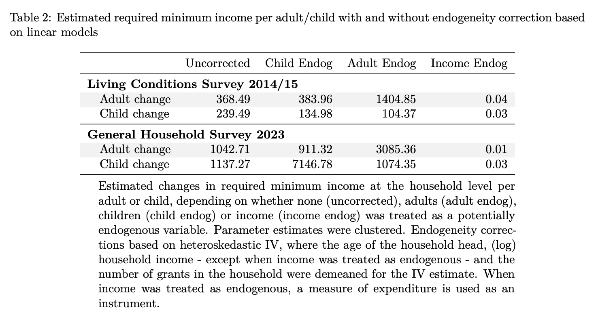

# Generate skewed income data
set.seed(123)
income <- rlnorm(100, meanlog = 10, sdlog = 1)
# Calculate Atkinson Index for different levels of inequality aversion
eps_values <- c(0.5, 1, 2)
atk_results <- sapply(eps_values, function(e) Atkinson(income, parameter = e))
# Create a data frame for plotting
df_atk <- data.frame(
epsilon = as.factor(eps_values),
atkinson_index = atk_results
)
# Plotting the sensitivity to epsilon
ggplot(df_atk, aes(x = epsilon, y = atkinson_index, fill = epsilon)) +
geom_bar(stat = "identity") +
labs(title = "Atkinson Index Sensitivity to Inequality Aversion",
subtitle = "Higher epsilon (ε) places more weight on the bottom of the distribution",
x = "Inequality Aversion (ε)",
y = "Atkinson Index Value") +
theme_solarized()Inequality
EKT 813
Prof SF Koch
2026-03-16
Some background
Much of the discussion comes from Deaton (1997) and O’Donnell et al. (2008)
There are many other texts that offer similar information
We will mostly make use of standard features of R
We will also use many of the packages we have used so far
I might add in the np-package (Hayfield and Racine 2008)
Today’s objectives
Describe social welfare
Discuss a variety of measures of inequality
Estimate/calculate some of those measures
Welfare and Inequality
A few basic properties
- Nondecreasing:
\[ V(y_1, y_2, \dots, y_n) \leq V(y_1, y_2+1, \dots, y_n) \]
- Anonymity/symmetry: who has what does not affect welfare
\[ V(y_1, y_2, \dots, y_n) = V(y_2, y_1, \dots, y_n) \]
A common assumption leads to an important principle
- Societal preferences for equality
- Diminishing marginal social welfare
- Quasi-concavity
- Given \(x^1\) and \(x^2\) list two different sets of \(y\)
- Also, \(V(x^1) = V(x^2)\), then \(\forall \lambda \in [0,1]\)
\[ V\left(\lambda x^1 + (1-\lambda) x^2\right) \geq V(x^1) = V(x^2) \]
- Principle of transfers: Inequality falls when rich transfer something to the poor
One final useful assumption
- Social welfare is homogeneous of degree 1
\[ W(ky_1, ky_2, \dots) = k^1 W(y_1, y_2) \]
- Assume \(k = \overline y \equiv \mu\)
\[ W(y_1, y_2, \dots) = \frac{1}{\mu} V(\frac{y_1}{\mu}, \frac{y_2}{\mu}, \dots) \]
Normalisation
- Equality has a baseline
\[ \begin{aligned} W = V(1, 1, \dots, 1) &= 1 \\ W = V(\mu, \mu, \dots, \mu) &= \mu \end{aligned} \]
- So, if the distribution is unequal
- Welfare cannot be larger than it was
- \(I\) is a measure of inequality
\[ W = \mu (1-I) \]
Atkinson’s welfare function
- Social welfare is
- Additive
- Captures inequality aversion
- Like CES, but \(\epsilon \neq 1\)
\[ W = n^{-1} \sum_i \frac{y_i^{1-\epsilon}}{1-\epsilon} \]
Atkinson welfare special case
- If \(\epsilon = 1\)
\[ \ln W = n^{-1} \sum_i \ln y_i \]
The Atkinson property I
- Marginal social utility for any two individuals is determined by their respective \(y\)
\[ \frac{\partial W/\partial y_1}{\partial W/\partial y_2} = \left(\frac{y_2}{y_1}\right)^\epsilon \]
- If \(\epsilon = 0\),
- No inequality aversion
- \(W = \mu\)
Atkinson property 2
- If \(\epsilon = 2\), and \(y_1 = 2y_2\)
- Welfare improves if the poorest get a bit extra, relative to the rich
\[ \frac{\partial W/\partial y_1}{\partial W/\partial y_2} = \left(\frac{y_2}{2y_2}\right)^2 = \frac{1}{4} \]
- As \(\epsilon \rightarrow \infty\)
- Welfare focuses on the poorest
- Rawlsian or maximin
Atkinson’s inequality measure
- When \(\epsilon \neq 1\)
\[ I = 1 - \left( n^{-1} \sum_i \left(\frac{y_1}{\mu} \right)^{1-\epsilon} \right)^{1/(1-\epsilon)} \]
- When \(\epsilon = 1\)
\[ I = 1 - \prod_i \left( \frac{y_i}{\mu} \right)^{(1/n)} \]
Code to visualize Atkison
Code to visualize Atkison

Atkinson inequality depends on aversion to inequality
The Gini Coefficient
The Gini Coefficient is a statistical measure of distribution developed by Corrado Gini in 1912. It is the most commonly used indicator of income or wealth inequality.
- Scale: It ranges from 0 to 1 (or 0% to 100%).
- 0 (Perfect Equality): Everyone has the exact same income.
- 1 (Perfect Inequality): One person has all the income; everyone else has zero.
- Interpretation: Higher values indicate greater inequality.
Mathematical Definition
The Gini is calculated using the Lorenz Curve, which plots the cumulative share of population against the cumulative share of income.
\[G = \frac{A}{A + B}\]
- Area A: The area between the “Line of Perfect Equality” (45° line) and the Lorenz Curve.
- Area B: The area under the Lorenz Curve.
- Note: Since \(A + B = 0.5\) in a normalized plot, the formula simplifies to \(G = 2A\).
Gini from microdata
- Take a look at Our World in Data
- It is the difference we would expect to find between two randomly chosen individuals in the population
- This depends also on how wide the distribution
- \(\rho_i\) is \(i\)’s rank in the population, richest to poorest
\[ \gamma = \frac{n+1}{n-1} - \frac{2}{n(n-1)\mu} \sum_i \rho_i y_i \]
Some final Gini thoughts
- Technically, the Gini arises from a social welfare function that depends on the individual’s rank (larger for the poor)
- Given the Gini \((\gamma)\) social welfare is
\[ W = \mu \left( 1-\gamma \right) \]
Code to visualize (Gini) inequality
- We generate log-normal “income” data
- This gives a “realistic” income distribution
# 1. Generate random income (Lognormal is typical for income)
set.seed(42)
income_data <- rlnorm(200, meanlog = 2, sdlog = 1)
# 2. Calculate Lorenz Curve and Gini
lorenz <- Lc(income_data)
gini_val <- round(Gini(income_data), 3)
# 3. Create Plot
df <- data.frame(p = lorenz$p, L = lorenz$L)
ggplot(df, aes(x = p, y = L)) +
geom_line(linewidth = 1, color = "darkblue") +
geom_abline(slope = 1, intercept = 0, linetype = "dashed", color = "red") +
annotate("text", x = 0.2, y = 0.8, label = paste("Gini Index:", gini_val), size = 6) +
labs(title = "Lorenz Curve Illustration",
x = "Cumulative % of Population",
y = "Cumulative % of Income") +
theme_solarized()Visualize (Gini) inequality

Lorenz Curve for Gini
Poverty
Headcount ratios
- Rather intuitive, counting the number of poor, but as a share of the population
- Or, the number of people below some poverty line, \(\ell\)
- Kind of social welfare function focusing on the poor…
\[ P_0 = n^{-1} \sum \mathbf{1}(y_i \leq \ell) \]
Very discontinuous function
- The barely poor and very poor are counted the same
- Why not pay some attention to how poor?
- The poverty gap
- Count the poor (as before)
- And how poor they are (using shortfalls)
\[ P_1 = n^{-1} \sum \left( 1 - \frac{y_i}{\ell} \right) \mathbf{1}(y_i \leq \ell) \] - Intuitively, this is a per capita measure of the shortfall - Tempting to think of as cost of eliminating poverty, but that ignores the economic ramifications of raising/transferring the amounts across individuals, even when administration is efficient and not corrupt
Poverty gap continued
- It is basically continuous
- It is basically concave
- So, principle of transfers holds
- Increases when poor transfer to nonpoor
- Increases when poor transer to less poor who become nonpoor
- Transfers among the poor don’t change it though
Foster, Greer and Thorbecke
- See Foster, Greer, and Thorbecke (1984)
- They generalise the above discussion
\[ P_\alpha = n^{-1} \sum \left( 1 - \frac{y_i}{\ell} \right)^\alpha \mathbf{1}(y_i \leq \ell) \]
- When \(\alpha = 0\), we get \(P_0\)
- When \(\alpha = 1\), we get \(P_1\)
- \(\alpha = 2\) is most commonly considered in papers (severity)
- Larger value puts more weight on poor outcomes
- Thus, penalizes society’s by the number of poor and how poor they are
One more thought experiment
- How does one determine such a poverty line?
- MinQ
- Food adequacy
- Other
- Look at our MinQ draft paper, briefly
Per child and adult poverty line estimates

Estimates
Distributions and comparisons
A thought experiment
- What if we wanted to compare inequality over time
- Look at the Gini or Atkinson index over time
- These are aggregate measures: some get more, some get less
- Aggregates could mask changes within?
- Could we dive in deeper?
- Concentration curves: extends the Lorenz idea to multiple dimensions
- Stochastic dominance: Offers (potential) statistical meaning to a comparison
Concentration curve
- Drop social welfare (for now)
- Keep our measure \(y_i\), which can be sorted/ranked from low to high or vice versa (it might be income)
- We will add another measure, say \(z_i\), which can also be sorted and ranked (it might be a burden)
- The curve plots the cumulative percentage of the population over the burden (from lowest to highest income) against the cumulative percentage of the population over income (ranked poorest to richest).
Code to visualizes a concentration curve
# 1. Generate data
set.seed(123)
n <- 1000
income <- rlnorm(n, meanlog = 10, sdlog = 1)
# Pro-poor spending (inversely related to income)
public_spend <- 5000 / (income^0.2) + rnorm(n, 0, 10)
# Pro-rich spending (positively related to income)
private_spend <- (income^1.2) / 1000 + rnorm(n, 0, 10)
df <- data.frame(income, public_spend, private_spend) |>
arrange(income) |>
mutate(
cum_pop = row_number() / n,
cum_public = cumsum(public_spend) / sum(public_spend),
cum_private = cumsum(private_spend) / sum(private_spend)
)
# 2. Plotting
ggplot(df) +
geom_line(aes(x = cum_pop, y = cum_public, color = "Public (Pro-Poor)"), linewidth = 1) +
geom_line(aes(x = cum_pop, y = cum_private, color = "Private (Pro-Rich)"), linewidth = 1) +
geom_abline(slope = 1, intercept = 0, linetype = "dashed") +
labs(title = "Concentration Curves for Healthcare Spending",
subtitle = "Population ranked by Income (Poorest to Richest)",
x = "Cumulative % of Population (by Income Rank)",
y = "Cumulative % of Spending",
color = "Spending Type") +
theme_solarized()Visualize a concentration curve

Concentration curves for private and public healthcare spending
South African Data
Somewhat practical SA example
- Let us look at food expenditure as a share of total expenditure in the household
- Let us also look at income and expenditure, maybe per capita?
- Let us compare Western Cape and Mpumalanga
- So, read in the data
- Calculate the food share
- Draw some pictures
Read in the data
# get food expenditure
food_totals <- read_dta("../Data/lcs/lcs-2014-2015-total-v1.dta") |>
clean_names() |>
select(uqno, secondary_group, third_group, valueannualized_adj) |>
filter(secondary_group >= 1, secondary_group < 20) |>
mutate(tg = as_factor(third_group)) |>
group_by(uqno) |>
summarise(food_expend = sum(valueannualized_adj), .groups = "drop") |> # food categories
droplevels()
# Get household information for income and expenditure
# Get the income, province and expend data,
# Adding 1 to income, so no more '0' values
# Probably better ways, we are just being quick
household <- read_dta ( "../Data/lcs/lcs-2014-2015-households-v1.dta") |>
clean_names() |>
select (uqno,
income = income_inkind,
expenditure = expenditure_inkind,
province_code) |>
mutate(uqno = as.character(uqno),
province = as_factor(province_code),
log_income = log(income+1),
log_expenditure = log(expenditure))
# merge and create food share
final_df <- inner_join(food_totals,
household,
by = "uqno") |>
mutate(food_share = food_expend/expenditure) |>
drop_na()Code to plot income and expenditure Lorenz
# 1. Data already read in
# 2. Calculate Lorenz Curve and Gini
lorenz_income = Lc(final_df$income)
gini_income <- round(Gini(final_df$income), 3)
lorenz_expenditure = Lc(final_df$expenditure)
gini_expend <- round(Gini(final_df$expenditure), 3)
lorenz_df <- tibble(p_income = lorenz_income$p,
L_income = lorenz_income$L,
p_expenditure = lorenz_expenditure$p,
L_expenditure = lorenz_expenditure$L)
# 3. Create Plot
lorenz_df |>
ggplot(aes(x = p_income, y = L_income)) +
geom_line(linewidth = 1, color = "darkblue") +
geom_abline(slope = 1, intercept = 0, linetype = "dashed", color = "red") +
annotate("text", x = 0.2, y = 0.8, label = paste("Income Gini Index:", gini_income), size = 6, col = "darkblue") +
geom_line(aes(x = p_expenditure, y = L_expenditure),
linewidth = 1, color = "lightblue") +
annotate("text", x = 0.2, y = 0.6, label = paste("Expenditure Gini Index:", gini_expend), size = 6, col = "lightblue") +
labs(title = "Lorenz Curves of Income and Expenditure",
x = "Cumulative % of Population",
y = "Cumulative % of Income/Expenditure",
caption = "Source: SA LCS 2014-15") +
theme_solarized()Plot of income and expenditure Lorenz curves

Lorenz Curve for Income and Expenditure in LCS data
Code for food share Ginis
# 1. Subsetted data, not really pretty code
WC <- final_df |>
filter(province == "Western Cape")
MP <- final_df |>
filter(province == "Mpumalanga")
# 2. Calculate Lorenz Curves and Ginis
lorenz_WC = Lc(WC$food_share)
gini_WC <- round(Gini(WC$food_share), 3)
lorenz_MP = Lc(MP$food_share)
gini_MP <- round(Gini(MP$food_share), 3)
WC_df <- tibble(p = lorenz_WC$p,
L = lorenz_WC$L,
province = "WC")
MP_df <- tibble(p = lorenz_MP$p,
L = lorenz_MP$L,
province = "MP")
lorenz_df = rbind(WC_df, MP_df) |>
mutate(province = as.factor(province))
# 3. Create Plot
ggplot(lorenz_df, aes(x = p, y = L,
colour = province)) +
scale_color_manual(
values = c("WC" = "darkblue", "MP" = "lightblue")
) +
geom_line(linewidth = 1) +
geom_abline(slope = 1, intercept = 0, linetype = "dashed", color = "red") +
annotate("text", x = 0.2, y = 0.8, label = paste("WC Gini Index:", gini_WC), size = 6, col = "darkblue") +
annotate("text", x = 0.2, y = 0.6, label = paste("MP Gini Index:", gini_MP), size = 6, col = "lightblue") +
labs(title = "Lorenz Curves of Food Share (WC v MP)",
x = "Cumulative % of Population",
y = "Cumulative % of Income/Expenditure",
caption = "Source: SA LCS 2014-15") +
theme_solarized()Food share Ginis

Lorenz Curve for Food Shares across two provinces in South Africa
Brief discussion
- Income and expenditure
- Income more unequal
- Suggestive of stochastic dominance (?)
- Both very high
- Did you expect this? Why/Why not?
- Food shares
- Western Cape more unequal
- Neither as bad as income or expenditure
- Expected? Why? Why not?
Code for concentration curves: Food share
# 1. data is already there
# but manipulate it to get the concentrations
# a bit like an empirical cdf
income_df <- final_df |>
select(food_share, income) |>
arrange(income) |>
transmute(
cum_pop = row_number() / n(),
cum_fs = cumsum(food_share) / sum(food_share),
mapping = "income"
)
expend_df <- final_df |>
select(food_share, expenditure) |>
arrange(expenditure) |>
transmute(
cum_pop = row_number() / n(),
cum_fs = cumsum(food_share) / sum(food_share),
mapping = "expenditure"
)
df <- rbind(income_df, expend_df) |>
mutate(mapping = as.factor(mapping))
# 2. Plotting
df |>
ggplot(aes(x = cum_pop, y = cum_fs, color = mapping)) +
geom_line(linewidth = 1) +
geom_abline(slope = 1, intercept = 0, linetype = "dashed") +
labs(title = "Concentration Curves for Food Shares",
subtitle = "Population ranked (Poorest to Richest)",
x = "Cumulative % of Population (by Rank)",
y = "Cumulative % of Food Budget Share",
color = "Ranking variable") +
theme_solarized()Concentration curve: Food share

Concentration curves for food share v income/exenditure
Food shares
- Food shares are pro-rich
- That is “Engel’s Law”: The poor spend more of their budgets on food
- Here, we do not see obvious direct stochastic dominance
- We would need to think a bit more about testing it.
- We will look at that next time…
References
Deaton, Angus. 1997. The Analysis of Household Surveys: A Microeconometric Approach to Development Policy. Baltimore, MD, USA: The Johns Hopkins University Press for The World Bank. https://documents.worldbank.org/.
Foster, James, Joel Greer, and Erik Thorbecke. 1984. “A Class of Decomposable Poverty Measures.” Econometrica 52 (3): 761–66. https://doi.org/10.2307/1913475.
Hayfield, Tristen, and Jeffrey S. Racine. 2008. “Nonparametric Econometrics: The Np Package.” Journal of Statistical Software 27 (5): 1–32. https://doi.org/10.18637/jss.v027.i05.
O’Donnell, Owen, Eddy van Doorslaer, Adam Wagstaff, and Magnus Lindelow. 2008. Analyzing Health Equity Using Household Survey Data: A Guide to Techniques and Their Implementation. Washington, DC, USA: The World Bank. https://documents.worldbank.org/.
Social welfare
\[ W(y) = V(y_1, y_2, \dots, y_n) \]